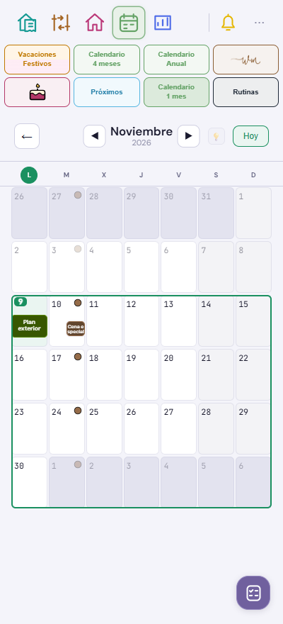
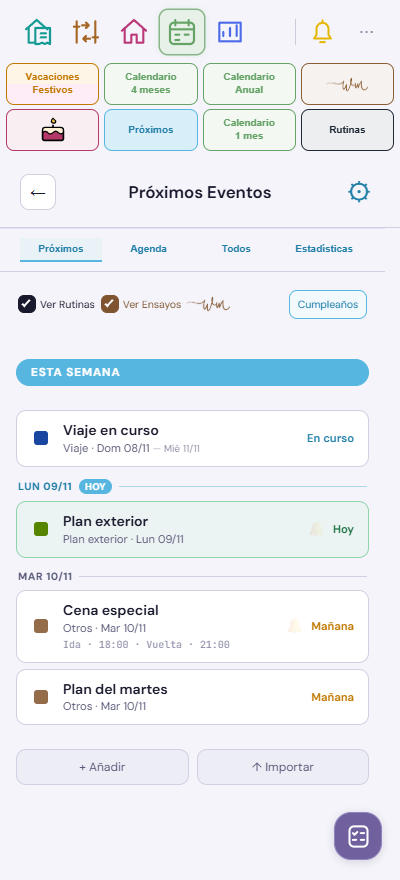
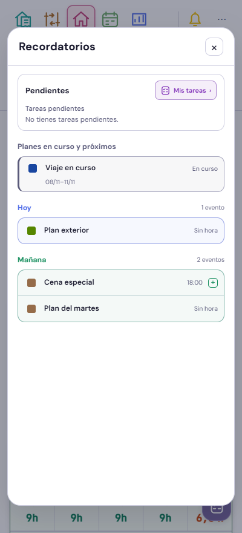

Cumpleaños, recordatorios y planes de un día · v546
Nuevo cumpleaños propone el día y mes actuales. Los avisos de semanas usan el mes real, aunque Home muestre un mes futuro. Los planes grandes de un día aparecen bajo su fecha en Próximos y Recordatorios.



Datos ficticios · fecha de prueba: 9 de noviembre de 2026. Las barras finas mantienen una línea. Los intervalos de varios días y los cortes de media casilla se conservan.
Comprobado a 320, 400 y 440 px, incluidos planes solapados, cambios de mes y año y fechas explícitas al editar cumpleaños. El atlas solo actualiza calendario mensual, Próximos y Recordatorios; las otras 172 capturas y sus revisiones se conservan.
Revisión anterior · VPN e histórico